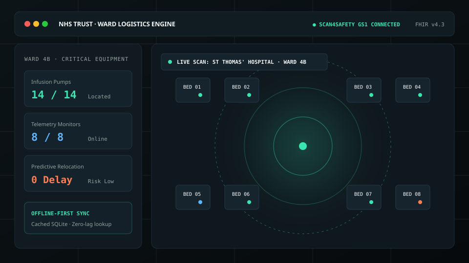

Sub-9s target locate speed
100% Offline RSSI buffer
HL7 FHIR v4.3 schema
Health Systems Architecture · In Development (GitHub)
Predictive Ward Logistics Engine
HL7 FHIR v4.3
Scan4Safety GS1-128
Offline-First IndexedDB
Ward Logistics Console · Floorplan Telemetry Prototype
Inspect Blueprint

Click to inspect architectural blueprint & clinical workflow
What makes locating essential medical hardware across hospital floors such a persistent puzzle?
Acute hospital wards manage hundreds of mobile infusion pumps, syringe drivers, and telemetry monitors that constantly shift between departments. When traditional cloud locators drop in basement corridors, physical clinical workflows stall.
AL GP 084 · Alaris GP Pump
Bay 2 · Bed 07 (Active Infusion)
Battery: 98% · Certified safe
BX SIG 109 · Baxter Sigma
Clean Utility Rm 4 (Staged)
Battery: 100% · Ready for patient intake
GS1 SCANNER BUFFER
(01)05012345678900(21)SN948124
Checksum: Verified GS1 128
Live Triangulation Simulator (Click to locate):
RSSI Sub-Meter Tracking
Ward 4B Spatial Map (Simulated Acute Floorplan)
X: 18.4m, Y: 06.2m
AL GP 084 · Bay 2, Bed 07 · Signal: -58 dBm (Strong) · Distance: 1.4m
RSSI Triangulated
Click tabs to switch context